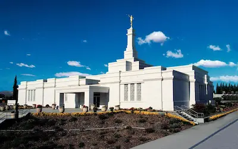
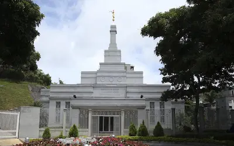
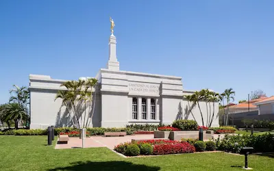
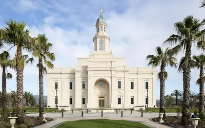
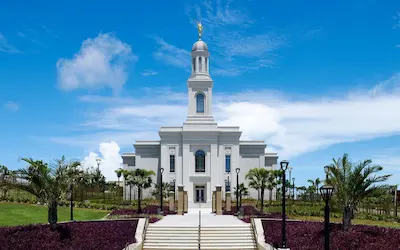
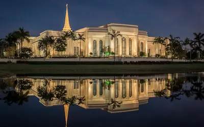

Temple Album
Home
Old
New
Large
Small
Temple Album
São Paulo Brazil
Calgary Alberta

Ciudad Juárez Mexico
Columbia South Carolina

Caracas Venezuela

Asunción Paraguay

Concepción Chile

Fortaleza Brazil

Fort Lauderdale Florida